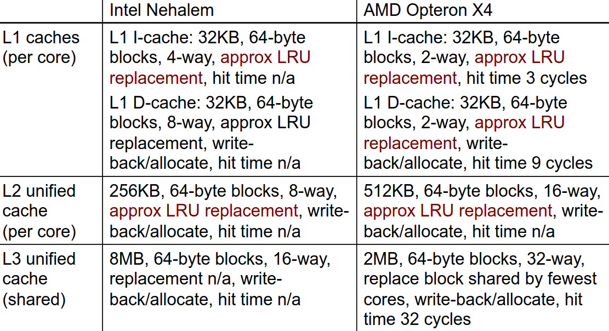

Hierarquia de Memória
Hiato Processador-Memória
- Para cada instrução, deve ser feito o seguinte processo:
- Ler Instrução;
- Ler Operando;
- Escrever Resultado.
- O hiato processador-memória diz-nos:
- "A memória é incapaz de alimentar o processador com instruções e dados com uma taxa suficiente de forma a mantê-lo constantemente ocupado".
- A causa para este problema é a diferente taxa de aumento do desempenho entre os processadores e a memória nos últimos anos;
- Trata-se de um dos principais obstáculos à melhoria do desempenho dos sistemas de computação.
Princípio da Localidade
- Permite acelerar os acessos à memória através de uma hierarquia;
- "Os programas tendem a aceder a uma porção limitada de memória num dado período de tempo".
- Permite utilizar memória mais rápida para armazenar a informação usada mais frequentemente/recentemente;
- Permite tirar partido da largura de banda, uma vez que a informação transferida entre diferentes níveis da hierarquia é efetuada por blocos.
Localidade Temporal
Um elemento de memória acedido pelo processador será, com grande probabilidade, acedido de novo num futuro próximo;
- Exemplos:
- Tanto as instruções dentro dos ciclos, como as variáveis usadas como contadores de ciclos, são acedidas repetidamente em curtos intervalos de tempo.
- Consequência:
- A 1ª vez que um elemento de memória é acedido deve ser lido do nível mais baixo (p.e. da memória central);
- Da 2ª vez que é acedido, no entanto, é muito provável que este se encontre em cache, evitando-se assim o tempo de leitura da memória central.
Localidade Espacial
Se um elemento de memória é acedido pelo CPU, então elementos com endereços na sua proximidade serão, com grande probabilidade, acedidos num futuro próximo.
- Exemplos:
- As instruções do programa são, normalmente, acedidas em sequência, assim como, na maior parte dos programas, os elementos de vetores/matrizes.
- Consequência:
- A 1ª vez que um elemento de memória é acedido, deve ser lido do nível mais baixo (p.e. memória central), no entanto, não será lido sozinho, mas sim com um bloco de elementos com endereços na sua vizinhança.
- Se o processador, nos próximos ciclos, aceder a um endereço vizinho do anterior (p.e. próxima instrução ou próximo elemento de um vetor), a probabiliade desse elemento já estar em cache é elevada.
Inclusão
- Os dados contidos num nível mais próximo do processador são um subconjunto dos dados contidos no nível anterior;
- O nível mais baixo contém a totalidade dos dados;
- Os dados são copiados entre níveis em blocos.

Terminologia
- Linha: A cache encontra-se dividida em linhas. Cada linha terá o seu endereço (índice) e tem a capacidade de um bloco;
- Bloco: Quantidade de informação que é transferida de cada vez da memória central para a cache (ou entre níveis de cache). É igual à capacidade da linha;
- Hit: Diz-se que ocorreu um hit quando o elemento de memória acedido pelo CPU se encontra em cache;
- Miss: Diz-se que ocorreu um miss quando o elemento de memória acedido pela CPU não se encontra em cache, sendo necessário lê-lo do nível inferior da hierarquia.
- Hit Rate: Percentagem de hits ocorridos relativamente ao total de acessos à memória;
- Miss Rate: Percentagem de misses ocorridos relativamente ao total de acessos à memória. (\( Miss\ Rate\ = 1 - hit\ rate \));
- Hit Time: Tempo necessário para aceder à cache, incluindo o tempo necessário para determinar se o elemento a que o CPU está a aceder se encontra, ou não, em cache;
- Miss Penalty: Tempo necessário para carregar um bloco da memória central (ou de um nível inferior) para a cache quando ocorre um miss.
Causas de Misses
- Os 3 C's:
- Obrigatória;
- Primeira referência ao bloco.
- Capacidade;
- Blocos que são descartados e mais tarde são necessários.
- Conflito;
- O programa faz repetidas referências a endereços de diferentes blocos de forma a mapear a mesma localização em cache.
- Obrigatória;
- Coerência:
- Diferentes processadores devem ver o mesmo valor na mesma localização;
- Duas fontes: true-sharing e false-sharing
Multilevel Caches
De forma a evitar o máximo de misses possível, opta-se por uma arquitetura de caches multilevel. Assim, tem-se os seguintes níveis:
- Cache primária presa à CPU;
- Muito pequena, mas rápida.
- Cache de nível 2;
- Serve os misses da cache de nível 1;
- Maior que a anterior, mas mais lenta, no entanto, mais rápida que a seguinte ou que a memória principal.
- Cache de nível 3 (em alguns casos, não existe e poderá já ser a memória principal);
- Serve os misses da cache de nível 2;
- Maior que a anterior, mas mais lenta, sendo mais rápida que a memória principal.
- Memória Principal.
- Serve os misses da cache de nível 3 ou, caso esta não exista, os misses da cache de nível 2.

Desempenho
\[ CPU_{exec-time}=(CPU_{clock-cycles} + Mem_{stall-cycles}) \times Clock\ cycle\ time \] \[ CPU_{exec-time}=(IC \times CPI_{CPU} + \frac{Mem_{stall-cycles}}{Instr}) \times Clock\ cycle\ time \]
- Com a introdução de uma cache single-level: \[ Mem_{stall-cycles} = IC \times \dots Miss\ rate \dots Mem\ accesses\ \dots Miss\ penalty \dots \] \[ Mem_{stall-cycles} = IC \times \frac{Misses}{Instruction} \times Miss\ Penalty \] \[ \frac{Misses}{Instruction} = \frac{Miss\ rate \times Memory\ accesses}{Instruction\ Count} = Miss\ Rate \times \frac{Memory\ Accesses}{Instruction} \]
Para cada nível \( i \) adicional de cache:
\[ Mem_{accesses}{level{i}} = \frac{Misses}{Instruction_{level_{i - 1}}} \] \[ Miss_{penalty}{level{i}} = (Hit\ rate \times Hit\ time \times Miss\ rate \times Miss\ penalty){level{i + 1}} \]
Miss Rates
-
Local Miss Rate
- Dado pelo número de misses na cache dividido pelo total de acessos à cache;
- Para o primeiro nível será igual ao \( Miss\ rate_{L1} \) e para o segundo será \( Miss\ rate_{L2} \).
-
Global Miss Rate
- Dado pelo número de misses na cache dividido pelo total de acessos à memória gerados pela PU;
- Para o primeiro nível será igual ao \( Miss\ rate_{L1} \), no entanto, para o segundo já será \( Miss\ rate_{L1} \times Miss\ rate_{L2} \).
Desempenho
Como é que a hierarquia de memória influencia o \( T_{exec} \)?
- Cada acesso à memória irá originar ciclos adicionais na execução do programa (\( \#CC_{MEM} \)) devido aos misses:
\[ T_{exec} = ( \#CC + \#CC_{MEM}) \times T_{CC} \]
- Cada miss implicará um aumento do \( \#CC \) em ciclos de miss penalty, logo:
\[ \#CC_{MEM} = no.\ miss \times miss\ penalty \]
Sendo que, o \( no.\ miss \) será dado por:
\[ miss\ rate \times no.\ acessos\ mem \]
- Assim, visto que \( \#CC = \#I \times CPI \), temos que:
\[ T_{exec} = \#I \times (CPI_{CPU} + CPI_{MEM}) \times T_{CC} \]
-
Em que:
- \( CPI_{CPU} \): número de ciclos que o processador precisa, em média, para executar cada instrução;
- \( CPI_{MEM} \): número de ciclos que o processador precisa de parar, em média, para esperar por dados da memória, visto que não foi capaz de encontrar estes em cache. Vulgarmente, designam-se por memory stall cycles ou wait states.
-
Podemos calcular o \( CPI_{MEM} \) da seguinte forma:
\[ CPI_{MEM} = \% acessos\ Mem \times miss\ rate \times miss\ penalty \]
- De notar que os acessos à memória devem-se a:
- Acesso a dados (instruções de Load ou Store);
- Busca de instruções.
- Como estes têm comportamentos diferentes, usam-se percentagens diferentes:
- Dados: Apenas uma determinada percentagem de instruções irá aceder à memória (\( \%Mem \)), pelo que, \( missrate_D \) referir-se-á ao acesso a dados;
- Instruções: Todas as instruções são lidas da memória, logo a percentagem de acesso à memória será de 100%, \( missrate_I \) referir-se-á ao acesso às instruções;
- Geralmente, a \( missrate_I \) é menor que a \( missrate_D \) devido à utilização da localidade espacial.
- Temos, então:
\[ CPI_{MEM} = (missrate_I + \% Mem \times missrate_D) \times misspenalty \]
Coerência na Cache
- Coerência
- Todas as leituras de um processador devem retornar o valor escrito mais recentemente;
- Escritas para a mesma localização por dois processadores devem ser vistas na mesma ordem por todos os processadores;
- Ou seja, a coerência deverá definir o comportamento para escritas e leituras na mesma localização da memória.
- Consistência
- Ocorre quando um valor escrito deverá ser devolvido por uma leitura;
- Se um processador escrever numa localização A e, posteriormente, numa localização B, qualquer processador que vir o novo valor de B, deverá também ver o valor de A;
- Ou seja, a consistência deverá definir o comportamento para escritas e leituras respeitando o acesso a outras localizações de memórias.
Forçar a Coerência
- Uma cache coerente providencia:
- Migrações: movimentos de dados;
- Replicações: múltiplas cópias dos dados.
- Protocolos para implementar coerência em caches:
- Directory Based
- Manter o estado partilhado de cada bloco numa única localização;
- Snooping
- Cada core deverá seguir o estado de partilha de cada bloco.
- Directory Based
Otimizações Básicas
- Maior tamanho dos blocos;
- Reduz o número de misses obrigatórias;
- Aumenta a capacidade e as misses por conflito, bem como a miss penalty.
- Aumentar o tamanho total da cache para reduzir a miss rate;
- Aumenta o hit time e o consumo energético.
- Maior associatividade;
- Reduz as misses por conflito;
- Aumenta o hit time e o consumo energético.
- Maior número de níveis de cache;
- Reduz o tempo médio de acesso à memória.
- Dar prioridade a misses de leitura ao invés de misses de escrita;
- Reduz a miss penalty.
- Evitar a tradução de endereços ao fazer indexação na cache:
- Reduz o hit time.
Tecnologias de Memória e Otimizações
- Métricas de desempenho:
- Latência é uma preocupação da cache;
- Largura de banda é uma preocupação dos multi-processadores e I/O;
- Tempo de acesso;
- Tempo entre um pedido de leitura e a chegada da word pretendida.
- Tempo de ciclo.
- Tempo mínimo entre pedidos não relacionados à memória.
- A memória SRAM tem uma baixa latência, pelo que é utilizada para cache;
- Organizando os chips de DRAM em diversas pilhas providenciará uma grande largura de banda que deve ser utilizada para a memória principal.
- SRAM:
- Precisa de pouca energia para reter o bit;
- Precisa de 6 transístores por bit.
- DRAM:
- Deve ser reescrita depois de lida;
- Deve ser atualizada de forma periódica;
- +/- 8ms (cerca de 5% do tempo);
- Cada linha pode ser atualizada em simultâneo.
- Um transístor por bit;
- As linhas de endereços são multiplexadas.
- Metade superior do endereço: row access strobe (RAS);
- Metade inferior do endereço: column access strobe (CAS).
Memória Flash
- Tipo de EEPROM;
- Tipos:
- NAND (mais densa);
- NOR (mais rápida).
Otimizações Avançadas
- Reduzir o hit time;
- Caches de primeiro nível mais pequenas e simples;
- Implementação de way predict.
- Especulativamente, seleciona um caminho dos disponíveis antes de iniciar um acesso normal à cache. Ao seguir apenas o caminho previsto, em vez de todos os disponíveis, poupará a nível energético.
- Aumentar a largura de banda;
- Implementação de pipelined caches, multibanked caches, non-blocking caches.
- Reduzir a miss penalty;
- Ter, primeiramente, a critical word, juntar os buffers de escrita.
- Reduzir a miss rate;
- Otimizações do compilador.
- Reduzir a miss penalty ou a miss rate através de paralelismo.
- Hardware ou compilador fazem prefetching.
Resumo